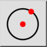

Keskipiste, piste
Työkalurivi / kuvake:


Valikko: Piirrä > Ympyrä > Keskipiste, piste
Shortcut: C, I
Komennot: circle | ci
Työkalurivi / kuvake:


Piirtää ympyrän annetulla keskipisteellä ja ympyräviivalla olevalla pisteellä.